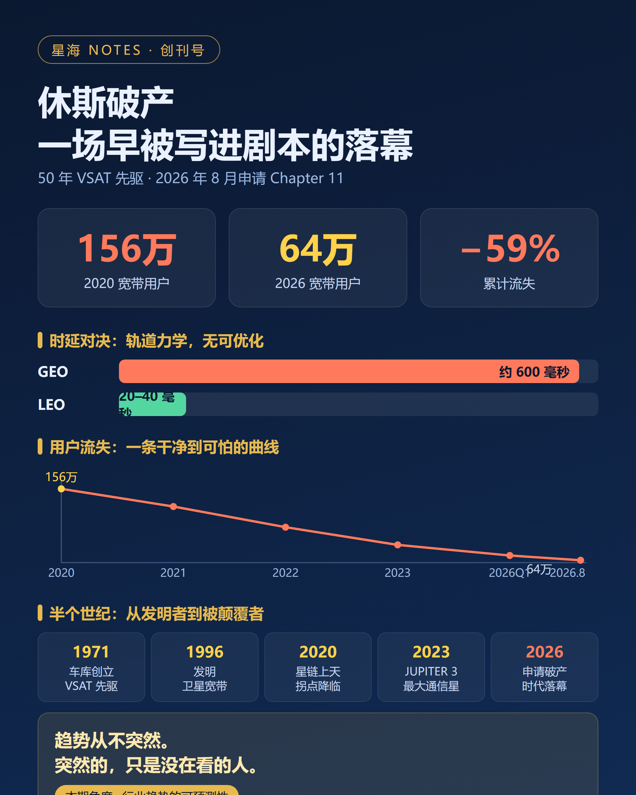

星海 NOTES · 创刊号（修订版）
2026 年 8 月初，休斯网络系统（Hughes Network Systems）向法院申请了 Chapter 11 破产保护。
消息本身并不算新闻——如果你在过去五年里认真看过它母公司 EchoStar 的任何一份季报，这一天只是迟早的问题。真正值得拿出来做创刊号选题的，是这件事的另一个侧面：一家发明了卫星互联网的公司，死在了一场它亲眼看着发生、甚至亲手参与建设的革命里。而这场革命的剧本，早在十几年前就已经开始流传。
要理解休斯的结局，得先把时间拨回去，看清楚它所在的赛道是怎样一步步从"唯一的选择"变成"被淘汰的形态"的。这条脉络，比破产数字本身重要得多。
地球静止轨道，距离地面 35786 公里。在这个高度上，卫星的公转周期恰好等于地球自转周期——从地面看，它永远悬在同一片天空。三颗这样的卫星，就能覆盖全球。
从上世纪六十年代第一颗地球同步卫星升空起，这个轨道就是卫星通信行业的全部叙事。轨道位置稀缺、准入门槛极高、单星造价以亿美元计，这些听上去是缺点，但在长达半个世纪的时间里，它们恰恰是 GEO 运营商最深的护城河：因为别人进不来，所以客户没得选。
休斯就是在这条河里长大的。1971 年，7 名年轻工程师在一间简陋车库里创立 Digital Communication Corp，后来并入休斯家族。1985 年，它与斯伦贝谢合作开发出全球第一套 Ku 波段 VSAT，并为沃尔玛建成全球首个商用卫星专网，开启了甚小口径终端的时代。1996 年，它推出 DirecPC——人类历史上第一个商业卫星宽带服务。说休斯"发明了卫星互联网"，不是修辞，是事实。
在那个时代，卫星宽带的客户画像很清晰：住在光纤到不了的地方的人。对他们而言，600 毫秒的时延、逢雨衰减的信号、昂贵且有限的流量，都是可以忍受的——因为替代选项是拨号，或者什么都没有。GEO 宽带的商业模式，本质上是一种"无替代市场"的收租。
问题在于，这门生意的成立前提，是"替代选项永远不存在"。而这个前提，从九十年代起就开始被人反复挑战了。
低轨卫星对 GEO 的冲击，并不是星链上天之后才开始的。第一轮冲击发生在三十年前。
九十年代，铱星（Iridium）、全球星（Globalstar）、以及比尔·盖茨支持的 Teledesic，先后试图用几十颗甚至几百颗低轨卫星构建全球通信网络。逻辑在纸面上无懈可击：卫星离地面只有几百公里，时延和地面电话几乎无差别，体验碾压 GEO。
结局众所周知。铱星 66 颗卫星刚布完，公司就在 1999 年走进了破产法庭——50 亿美元的系统，最终被以 2500 万美元的价格变卖。Teledesic 甚至没能撑到发射。低轨通信的第一次浪潮，以一种近乎耻辱的方式收场，而 GEO 阵营是这场溃败最投入的旁观者。
但整个行业从这场溃败里学到的教训，事后看是错的。
当时的共识是：低轨通信在商业模式上不成立，造星太贵、发射太贵、终端太贵，GEO 才是卫星通信的"正途"。这个判断在 1999 年是对的——摩托罗拉那个年代，造一颗卫星是手工作坊式的定制工程，发射一次的成本以亿美元计，而且没有复用。问题是，行业把这个"在当时的成本结构下不成立"的经验，固化成了"低轨永远不成立"的信仰。
这正是休斯后来一切战略失误的认知原点。不是它看不见低轨，而是它所在的整个行业，早在二十年前就"论证"过低轨不行，并把这个结论写进了战略心智里。最难破除的偏见，往往都曾经是对的。
让低轨第二次浪潮与第一次命运截然不同的，不是某个单点技术突破，而是三条成本曲线在同一时期先后越过了临界点。
第一条是发射。2015 年 12 月，SpaceX 的猎鹰 9 号首次实现一级火箭回收。火箭从一次性消耗品变成可复用的交通工具，入轨成本由此开始数量级式地下移。铱星当年被发射成本压垮的死结，就此解开。
第二条是制造。卫星从定制的奢侈品变成流水线产品。星链的卫星以"周"为单位下线，单星成本被压到传统 GEO 卫星的零头——一颗 GEO 卫星的造价，够 LEO 阵营打上去几百颗。
第三条是终端。相控阵天线从军工货架走向消费品，几千元人民币量级的终端，让"卫星宽带进家庭"第一次在经济上可行。
三条曲线交汇的结果，是 2019 到 2020 年间，星链开始规模化部署，并在随后几年里把全球在轨活跃卫星的数量级彻底改写。GEO 行业面对的不再是九十年代的 PPT 对手，而是一个每周都在变强的现实竞争者。
行业内部的警报其实早就响了，而且响得毫不含糊：2017 年之后，全球商用 GEO 卫星的年订单量从常年二十颗上下的水平，萎缩到了个位数——产业链最上游的制造商，是最先感受到寒意的。2020 年 5 月，拥有五十多年历史的国际通信卫星公司 Intelsat 申请破产保护；欧洲的 Eutelsat 选择合并 OneWeb，用联姻的方式向低轨转型求生；Viasat 则在焦虑中押上全部身家并购 Inmarsat。
换句话说，在休斯走进破产法庭的六年之前，GEO 阵营的每一张牌桌上，都已经有人在用最决绝的方式应对同一场替代。休斯不是第一个倒下的，它只是倒得最"标准"的那一个——因为它几乎什么都没做。
现在可以把崩塌的因果链完整地串起来了。它的起点不在财务报表里，在物理课本里。
GEO 卫星距地三万六千公里，信号一个往返，固有时延约 600 毫秒。这个数字不是休斯工程团队努不努力的问题，它是地球半径和光速决定的，没有任何优化空间。而星链把卫星架在 550 公里的高度，时延压到 20 到 40 毫秒，体验与地面宽带几乎无差别。
时延决定的不是"快一点还是慢一点"，而是"能用还是不能用"。视频会议、在线游戏、远程办公、实时交易——这些构成当代宽带价值的应用，在 600 毫秒的时延下全部失效。这意味着 GEO 宽带被永久性地逐出了主流市场，只能退守到"没有别的选择"的角落。而这个角落，还在被另一头的地面光纤和 5G 持续蚕食。休斯被困在了一个两头收窄的夹层里。
物理劣势之上，是成本结构的碾压。LEO 阵营靠批量制造和可回收发射，把单位带宽成本一路打到与地面宽带平价；GEO 这边，一颗卫星数亿美元、一次发射数亿美元、在轨寿命十五年——这个成本结构决定了它连"降价求生"的资格都没有。休斯自己的首席重组官 Robert del Genio 在法庭文件里说得很直白：来自低轨的竞争"是结构性的，而不是周期性的"。结构性，意味着熬不过去。
于是就有了那条干净到可怕的用户曲线：宽带用户从 2020 年底的 156 万，一路滑到 2026 年 8 月的 64 万，累计流失近六成；更致命的是斜率——仅 2025 单年，降幅就达到 21.7%，流失在加速而不是收敛。del Genio 同时承认："公司预计这一趋势不会逆转。"
用户流失击穿收入，收入下滑撞上高固定成本——卫星打上天之后，每一年的折旧、运维、利息都是刚性的，收入端每流失一个用户，利润表上都是纯失血。FY2025 净亏损超过 12.7 亿美元。最后的引爆点是纯粹的时间问题：2026 年 8 月 1 日，约 15 亿美元票据到期，而公司账面现金只剩约 1 亿。两周后，休斯走进破产法庭。
请注意这条因果链的顺序：物理缺陷是根，成本碾压是放大器，用户流失是果，债务危机是时间戳。每一个环节都有公开数据可查，每一步演进都提前数年在 EchoStar 的 10-Q 里写好了。任何愿意逐季读财报的人，都能在 2020 年之后就画出这条下行线，并给出与今天相差无几的结局预判。这场死亡没有黑天鹅，全是灰犀牛，而且是一头走得极慢的灰犀牛。
如果休斯对低轨一无所知，这个故事只是一个"落后者被淘汰"的普通案例。但事实远比这讽刺。
2021 年，五十岁的休斯骄傲地宣布：为 OneWeb 低轨星座研发生产关口站系统和核心终端模块。它的官方公众号在同一年写道："不断创新是休斯的基因，休斯在不断挑战一切可能的极限。"
也就是说，早在破产前五年，休斯就比世界上绝大多数公司都更近距离地摸到了那场将要埋葬自己的革命——它亲手为颠覆者造设备。然后，它做出了全文最关键的一个决策：把自己最先进的 JUPITER 3 卫星——2023 年发射、容量超过 500 Gbps、代表 GEO 技术巅峰的一颗星——押注在正在被淘汰的 GEO 消费宽带上。
看得到，为什么做不到？复盘休斯的处境，卡死它的是三股纠缠在一起的力量，而它们之间互为因果。
一是资本结构。15 亿美元债务的到期日，被钉死在了技术替代周期完成之前。转型低轨需要数年时间和巨额资本开支，而休斯的资产负债表根本不给它这个时间——再好的战略，也熬不过一张到期的票据。这不是技术失败，是财务工程失败。
二是沉没成本。JUPITER 3 刚打上天，账面价值数亿美元。承认 GEO 消费宽带没有未来，就等于承认这颗星是错误资产——对管理层而言，这比继续投入更痛苦。于是越亏越投，越投越亏，沉没成本从包袱变成了决策本身。
三是组织心智。也就是第二章说的那个历史遗产：整个行业都"论证"过低轨不行。休斯的创新基因没有消失，只是在错误的框架里空转——它把全部工程才华用于持续优化一个正在被物理定律淘汰的轨道，而对边缘市场的每一次优化，都在加深对主流市场的误判。
这三股力量加在一起，构成了一种大企业特有的死法：不是死于无知，而是死于"知道，但全身每一个器官都被锁定在过去"。
中国正站在这场 GEO 向 LEO 代际转换的同一赛场上：一端是中星系列、亚太卫星等 GEO 资产的存量运营，另一端是星网（GW）、千帆（G60）等低轨星座的加速部署。休斯的剧本离我们并不远，值得拆成几条可以直接落地的纪律。
第一，GEO 运营商要主动管理"替代敞口"，而不是赌翻盘。 低轨对 GEO 的替代不是均匀的：它碾过的是消费宽带，碾不过的是广电传输、应急通信、航空海事中继、政企专网这类对广域覆盖和广播特性有刚性需求的场景。理性的动作是按场景拆开资产负债表，把资本开支从"再造一颗大卫星翻本"转向现金流管理和不可替代场景的深耕。休斯用 15 亿美元证明了一件事：在替代主战场上加仓，加仓本身就会成为沉没成本。
第二，低轨星座要明白：部署速度本身就是护城河。 休斯案例的反面教材意义在于，它说明这个赛道的窗口期不是无限的——LEO 的商业模式成立与否，取决于能不能在竞争对手的成本曲线触底之前完成规模部署。星网和千帆真正要盯的硬指标只有一个：单位带宽成本与地面宽带的平价点。谁先摸到那个点，谁就把对手锁进了休斯的位置。
第三，把先行指标变成董事会级的纪律。 休斯的结局之所以"可预判"，是因为所有信号都躺在公开数据里：用户流失率及其斜率、ARPU 变化、对手星座的部署节奏、产业链上游的 GEO 新订单量。这些指标领先利润表三到五年。趋势管理本质上是一种"提前看、提前动"的组织纪律——每个季度审一次，而不是等利润表逼你转向。
第四，债务久期必须长于技术替代周期。 这一条最容易被忽略，却是休斯的直接死因。它的技术判断错得并不离谱，它只是没有撑到转型完成的那一天。对重资产的航天企业而言，资本结构本身就是战略：如果你的债务在技术变革完成之前到期，那么你实际上已经替市场做出了选择。
休斯没有输给技术。它输给了时间错配与心智惯性——输给了一个自己曾经正确、后来过时的判断，输给了到期日早于转型日的资产负债表，输给了"摸到颠覆者却选择做它的供应商"的那一念之差。
一场五十年巨头的解体，轨迹干净得近乎残忍：所有信号都早已亮起，只是没有人愿意在阳光明媚时承认冬天会来。
行业趋势从不突然。突然的，只是没在看的人。
——这，就是「星海 Notes」想和你一起训练的眼睛。
星海 Notes · 创刊号（修订版）
事实来源：休斯官方公众号《休斯半个世纪公司历史的 5 个主要创举》（2021-02-05）、EchoStar 破产法庭文件及季度 10-Q、angmobile《卫星巨头，宣布破产！》、SatNews、Reuters、SpaceNews 等多源公开报道，已交叉核对。
